Real vs AI-Generated Image Detection · A Full-Syllabus Computer-Vision Project
AIC341 — Introduction to Computer Vision | Department of Computer Science | COMSATS University Islamabad | May 2026
Generative diffusion models now synthesise images that the human eye cannot reliably tell apart from real photographs. This project, VeriVision, builds an interpretable deep-learning system that classifies an image as either REAL (camera-captured) or FAKE (AI-generated), and explains every decision with a visual saliency map.
The detector is trained on the CIFAKE dataset (120,000 images) and is built around two models: a convolutional neural network written from scratch and a ResNet-50 transfer-learning model. A distinctive preprocessing contribution adds the Fourier-magnitude spectrum of each image as an extra input channel, exploiting the spectral fingerprints that diffusion models leave behind. On the held-out 20,000-image test set the from-scratch CNN reaches 96.8 % accuracy and the ResNet-50 model reaches 98.3 % accuracy with a ROC-AUC of 0.998.
Around this detector, the project is deliberately extended into a whole-syllabus computer-vision portfolio. A classical-CV toolkit of ten runnable modules demonstrates every remaining unit of the AIC341 outline — image formation, sampling and aliasing, feature detection, the Hough transform and RANSAC, geometric transformations, stereo and epipolar geometry, model fitting and regularisation, optimisation and back-propagation, optical flow and motion, and representation learning and generative models. Each module produces real result figures, all of which are presented and discussed in this report. The result is a single coherent project that maps onto the full course rather than a single topic.
Between 2023 and 2026, text-to-image generators — Stable Diffusion, DALL·E 3, Midjourney and their successors — crossed the threshold of photorealism. The same capability that powers creative tools also powers harm: fabricated news imagery, non-consensual deepfakes, AI “art” passed off as human-made, and identity fraud. The defensive response is synthetic-image detection: an automated, trustworthy way to flag images that were never captured by a camera.
A detector is only useful if practitioners can trust it, and trust requires explanation. VeriVision is therefore designed around two goals at once — accuracy and interpretability — so that every verdict comes with the visual evidence behind it.
The detection system corresponds most directly to Unit
5 (learning in computer vision) and Unit 7
(generative models). To make the project span the whole course, a second
component — the src/classical/ toolkit — was implemented.
It contains ten modules, each mapped to a course unit, each producing
genuine result figures from real images. Sections 4–10 of this report
walk through that toolkit one unit at a time. Section 11 maps the entire
project back onto the course learning outcomes.
Section 3 documents the VeriVision detector end to end. Sections 4 through 10 present the classical-CV toolkit, one course unit per section, each with its result figures and discussion. Section 11 gives the CLO mapping, Section 12 lists every command needed to reproduce the work, and Section 13 concludes with limitations and future directions.
Given an RGB image, decide whether it is REAL (captured by a physical camera) or FAKE (produced by a diffusion model), and produce a saliency map that shows which regions drove the decision. This is a binary image classification problem with an explicit interpretability requirement.
The project uses CIFAKE (Bird & Lotfi, IEEE Access, 2024):
A 10 % validation set is carved from the training split with a fixed seed; the 20,000-image test set is never touched until final evaluation.
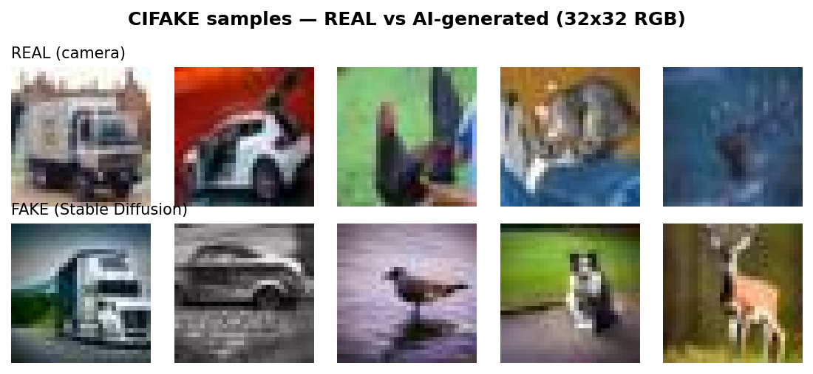
Standard transforms. Training images are resized to the model’s input resolution, randomly horizontally flipped, given a mild random translation (±5 %), converted to tensors and channel-normalised. Validation and test images are only resized and normalised.
A deliberate restraint. Heavy Gaussian blur and aggressive down-scaling are not used as augmentations. Robustness studies on CIFAKE show that blur destroys the very high-frequency structure that distinguishes REAL from FAKE, collapsing detector accuracy. Avoiding it is a conscious design choice.
The FFT channel (our contribution). Diffusion models leave characteristic artefacts in the Fourier domain — cross/ring patterns in the magnitude spectrum and an unnatural high-frequency energy profile. Instead of training a separate spectral model, VeriVision computes the log-magnitude of the 2-D FFT of each image’s luminance channel and appends it as a fourth input channel, so a single network learns jointly from pixel and spectral evidence.
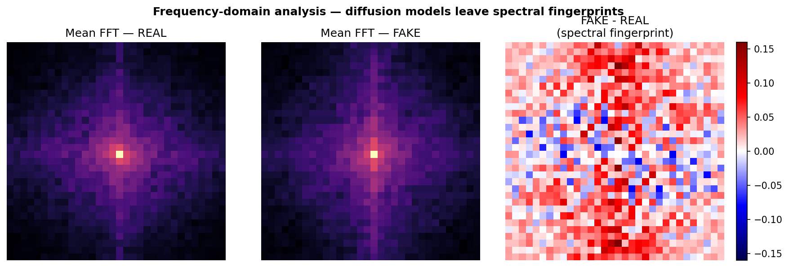
Custom CNN (from scratch). Three convolutional blocks (32 → 64 → 128 channels), each a doubled Conv–BatchNorm–ReLU stack followed by 2 × 2 max-pooling, then global average pooling and a two-layer classifier head with dropout. About 0.2 M trainable parameters. It operates at the native 32 × 32 resolution.
ResNet-50 (transfer learning). A torchvision ResNet-50 with ImageNet pretrained weights; the final fully-connected layer is replaced with a dropout + two-way classifier. Inputs are up-sampled to 224 × 224 to match the pretraining distribution, and all layers are fine-tuned.
When the FFT channel is enabled, the first convolution is surgically widened from three to four input channels — the RGB filter weights are copied verbatim and the new channel is initialised from their mean, preserving the pretrained features.
| Setting | Custom CNN | ResNet-50 |
|---|---|---|
| Optimiser | AdamW (lr 1e-3, weight decay 1e-4) | AdamW (lr 1e-3, weight decay 1e-4) |
| LR schedule | Cosine annealing | Cosine annealing |
| Loss | Cross-entropy | Cross-entropy |
| Batch size | 128 | 64 |
| Epoch budget | 10 | 5 |
| Early stopping | Patience 3 on val-loss | Patience 3 on val-loss |
All runs are seeded across random, numpy
and torch, with deterministic cuDNN, so results are
reproducible.

Both models were evaluated once, on the untouched 20,000-image CIFAKE test set.
| Metric | Custom CNN | ResNet-50 |
|---|---|---|
| Accuracy | 96.77 % | 98.26 % |
| Precision | 96.96 % | 98.19 % |
| Recall | 96.57 % | 98.33 % |
| F1-score | 96.76 % | 98.26 % |
| ROC-AUC | 0.9953 | 0.9983 |
The ResNet-50 model is the stronger detector on every metric, as expected from a deep pretrained backbone. The remarkable result is the from-scratch CNN: with only ~0.2 M parameters it still reaches 96.8 % accuracy, confirming that the REAL-vs-FAKE signal in CIFAKE is strong and learnable even by a small network.


Every prediction is accompanied by a Grad-CAM
heatmap. Grad-CAM weighs the final convolutional feature maps by the
gradient of the predicted class, producing a coarse map of “where the
network looked”. For the custom CNN the target layer is the last
convolution; for ResNet-50 it is the final bottleneck block. Heatmaps
are upsampled and blended over the input at 40 % opacity. Consistent
with the CIFAKE literature, the maps show detectors keying on
background texture and high-frequency content rather
than on the foreground object — exactly the region where generative
artefacts concentrate. The Grad-CAM grid is regenerated by
scripts/demo.py after training and is also shown live in
the Streamlit demo app.
Syllabus topics: overview, image formation,
geometric vision, the CV pipeline, applications.
Module:
src/classical/unit1_image_basics.py.
Every real photograph is formed by perspective projection: a 3-D world point X maps to a 2-D pixel x through the camera equation x ≈ K [R | t] X, where K holds the intrinsic parameters (focal length, principal point) and [R | t] the camera’s pose. This is the physical process that the FAKE half of CIFAKE never undergoes — which is the deepest reason its image statistics differ.
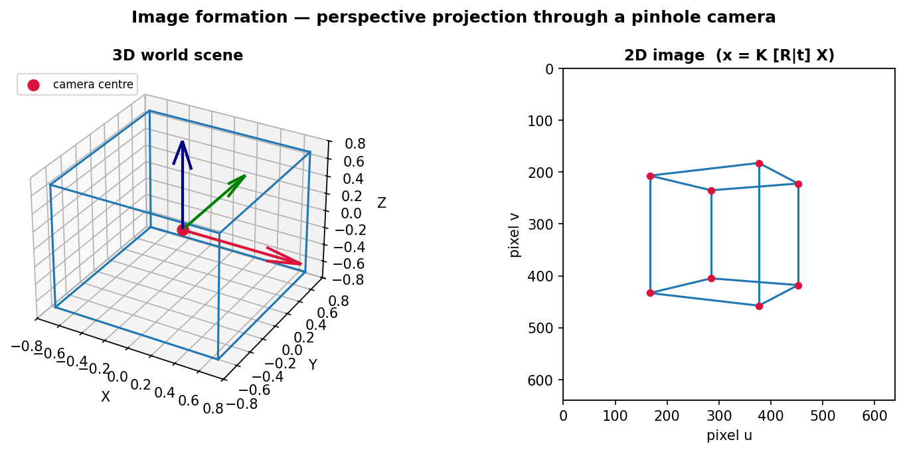
A digital image is a sampled grid of intensities. It can be split into colour channels, reduced to a luminance image, and summarised by an intensity histogram. Different colour spaces expose different cues: RGB is the display space, HSV separates colour from brightness, and CIELAB is perceptually uniform.
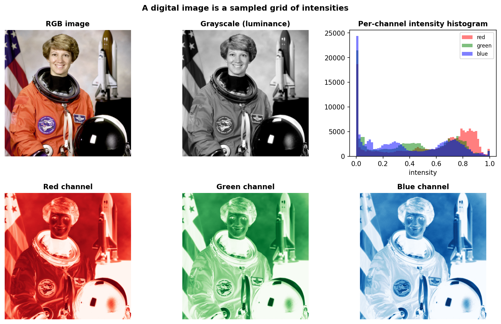
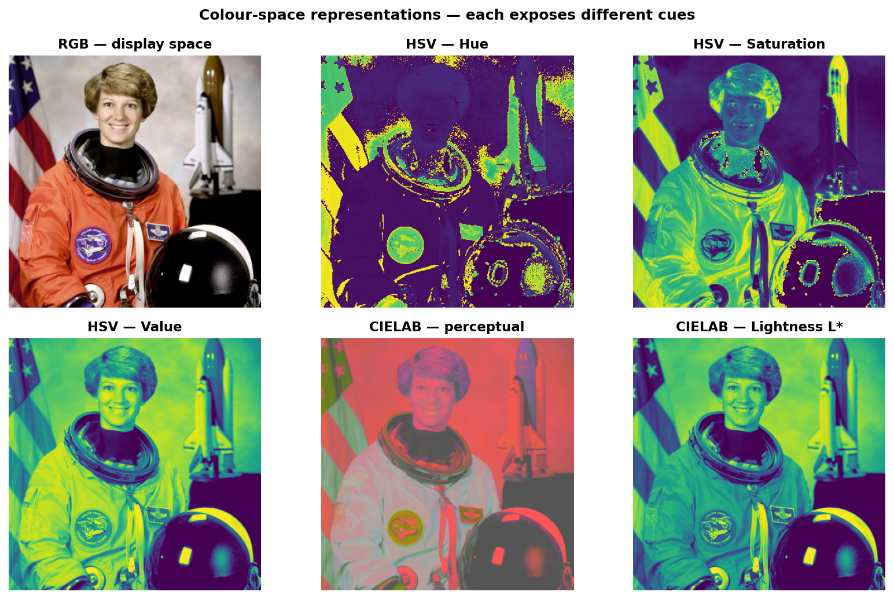
Almost every CV system follows the same pipeline: acquisition → pre-processing → feature extraction → model/inference → decision. VeriVision is a concrete instance of it, and naming the stages makes the rest of this report easy to place.
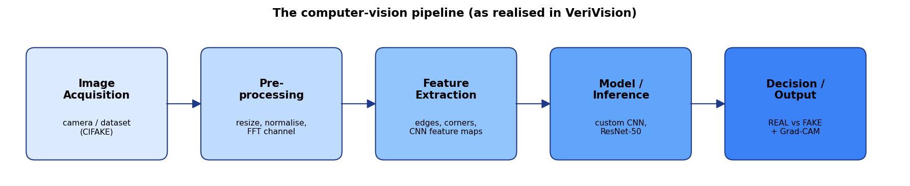
Syllabus topics: image sampling & aliasing,
up/down-sampling, multiscale pyramids, edges, corners, blobs, local
features & keypoints, the Hough transform, RANSAC.
Modules: unit2_sampling,
unit2_features, unit2_hough_ransac.
Sampling a signal below the Nyquist rate causes aliasing: high frequencies masquerade as false low frequencies. The cure is to low-pass filter before down-sampling.
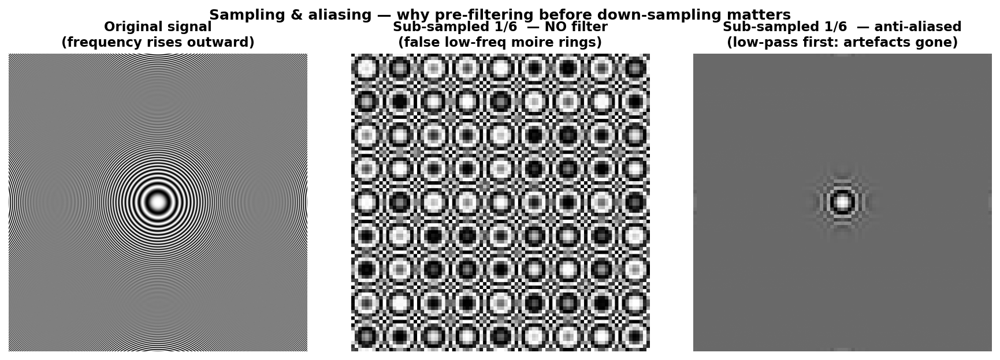
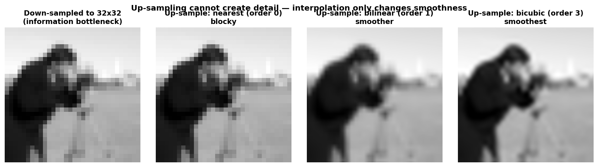
Features live at different scales, so images are analysed as pyramids: a Gaussian pyramid is a stack of progressively blurred and shrunk copies; a Laplacian pyramid stores the band-pass detail lost between levels.
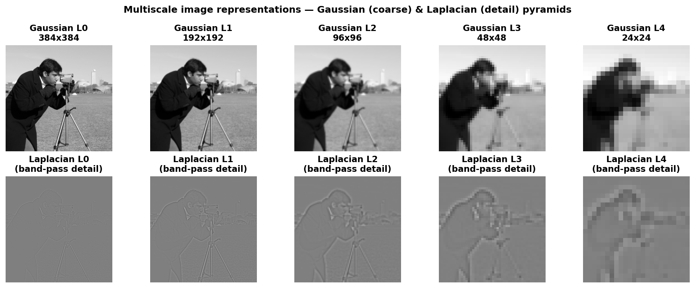
Edges are intensity discontinuities, found with gradient operators and refined by the Canny detector. Corners are points where intensity changes in every direction — stable, repeatable interest points (Harris). Blobs are roughly circular regions, detected across scale with the Laplacian-, Difference- and Determinant-of-Gaussian operators.
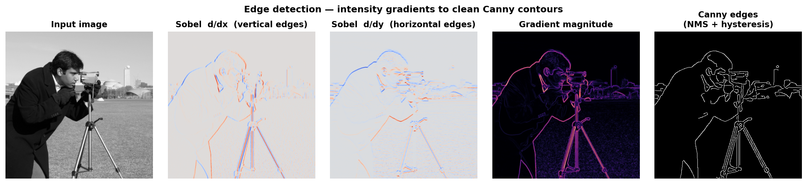
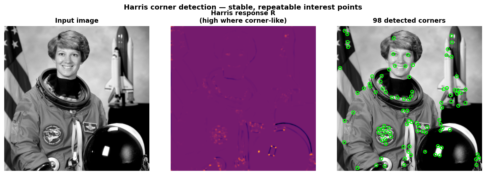
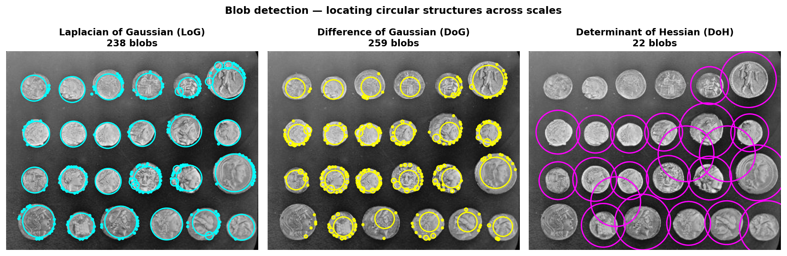
A keypoint is an interest point plus a descriptor — a compact vector that characterises its neighbourhood. ORB descriptors can be matched between two views of a scene, which is the foundation of stitching, tracking and the stereo geometry of Unit 3.
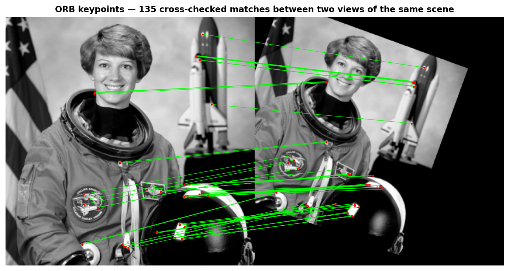
The Hough transform detects parametric shapes by letting every edge pixel vote in a parameter space; shapes appear as peaks in the accumulator. It is robust to noise and to gaps in the shape.
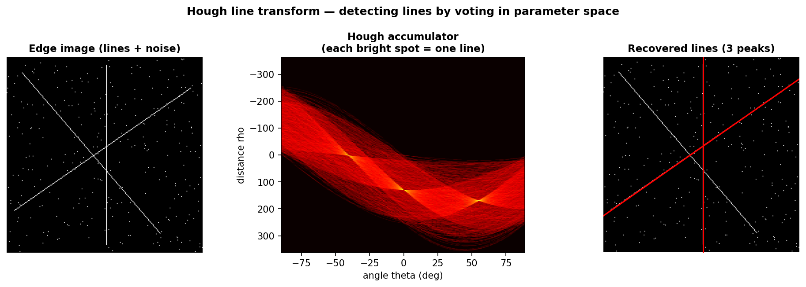
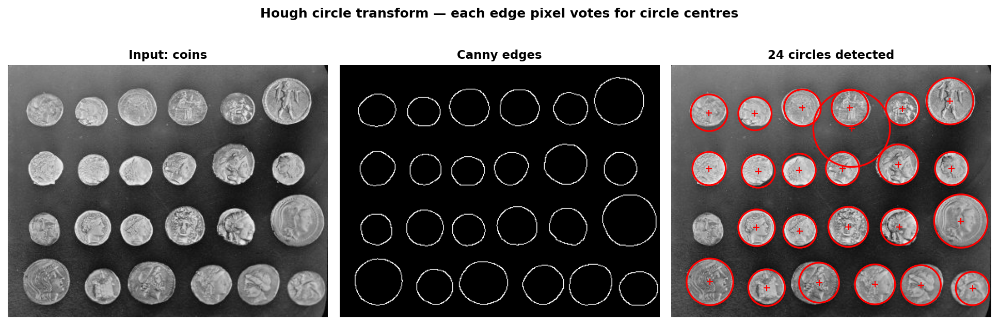
RANSAC (RANdom SAmple Consensus) fits a model when the data are heavily contaminated with outliers. It repeatedly fits a minimal sample and keeps the hypothesis with the most inliers — succeeding where ordinary least squares is dragged off by the outliers.
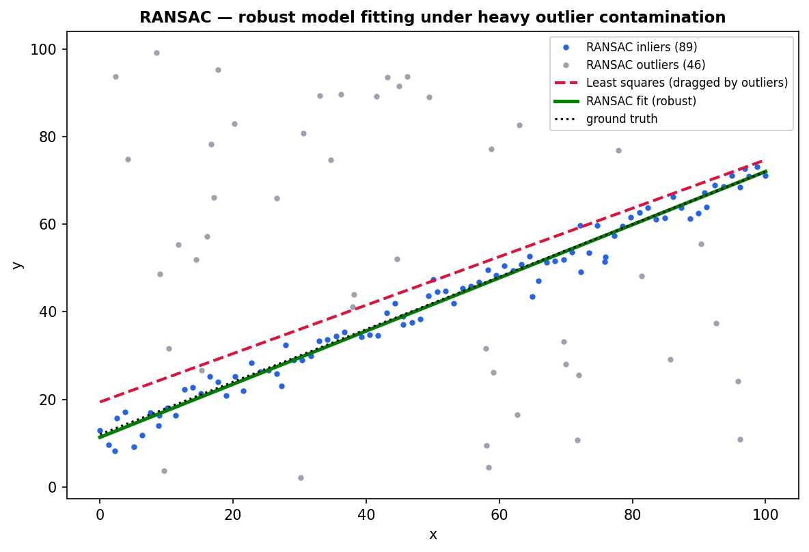
Syllabus topics: image transformations &
warping, stereo vision, depth from disparity, epipolar geometry, stereo
rectification. Modules: unit3_transforms,
unit3_stereo.
Geometric transformations form a hierarchy of increasing freedom: translation (2 DoF), Euclidean (3), similarity (4), affine (6) and projective/homography (8). Each preserves a little less structure than the last; the homography is exactly the map between two images of a planar scene.
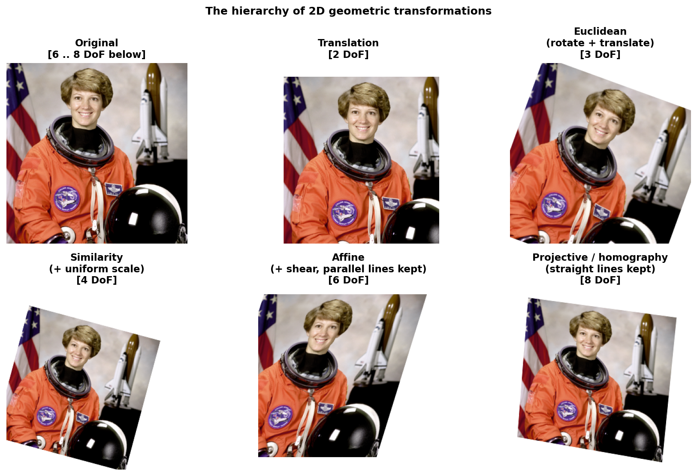
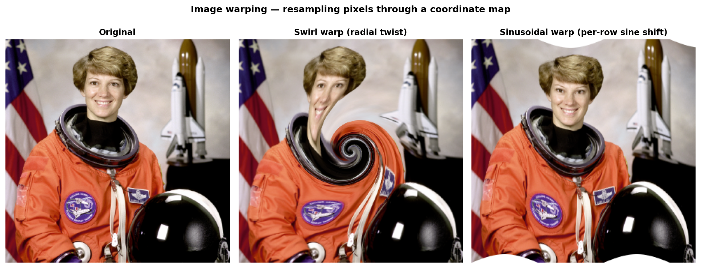
Two horizontally displaced cameras see the same scene from slightly different viewpoints. The horizontal shift of a point between the two images is its disparity, and depth is inversely proportional to it: Z = f · B / d. A block-matching algorithm searches, for every pixel, the disparity that best aligns a window between the two views.
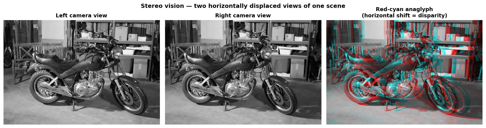
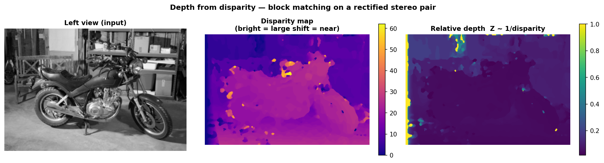
The fundamental matrix F captures the geometry between two views: for any point in one image, its match in the other must lie on a single line — the epipolar line. F is estimated here from ORB matches with RANSAC. Because the stereo pair is rectified, the epipolar lines come out horizontal, which is what makes the 1-D disparity search of Section 6.2 valid.
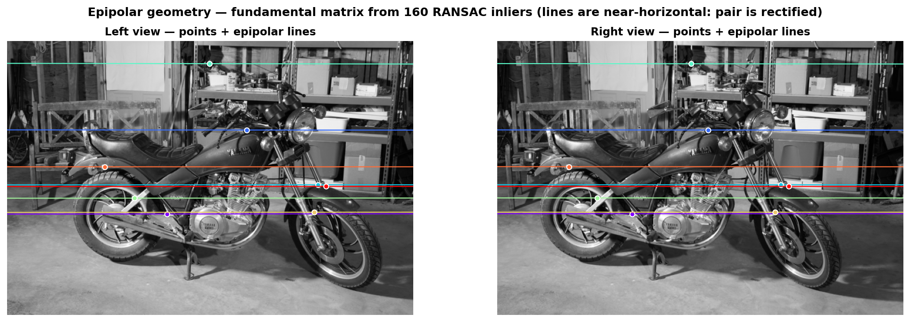
Syllabus topics: model fitting, regularisation,
kernel regression, polynomial curve fitting, over- and under-fitting.
Module: unit4_model_fitting.
These ideas are the statistical foundation of the deep models in Unit 5: a CNN is simply a very expressive fitted model, and weight decay is ridge regression.
Fitting polynomials of increasing degree to the same noisy data shows the core trade-off: too low a degree under-fits (cannot capture the trend), too high a degree over-fits (chases the noise).
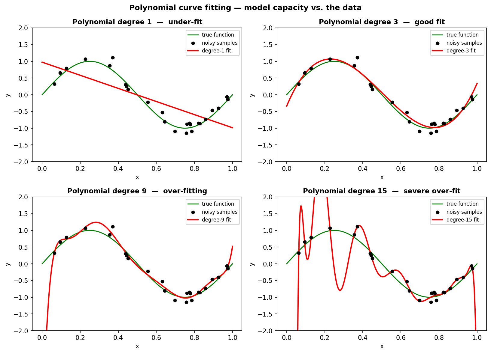
Plotting training and test error against model complexity reveals the classic picture: training error falls monotonically, but test error is U-shaped. The minimum of that U is the best-generalising model.
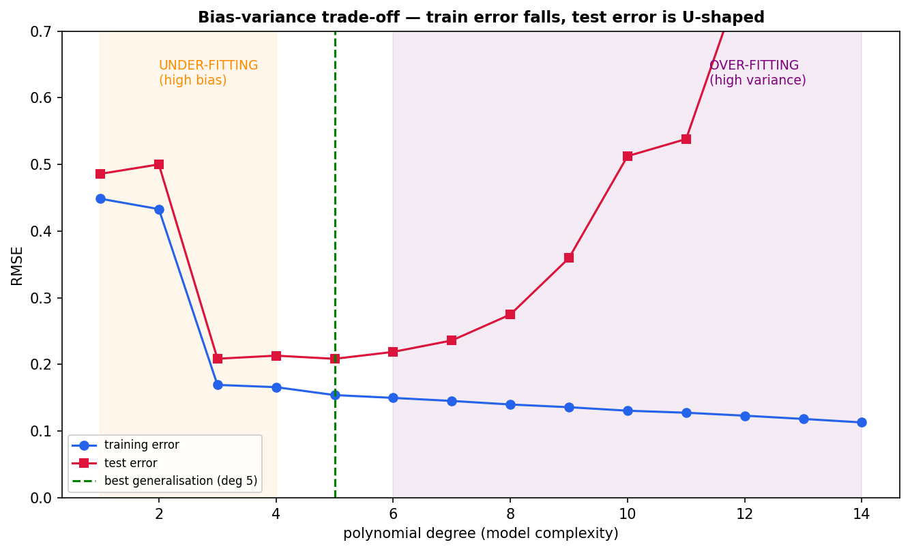
Regularisation lets us keep a high-capacity model but penalise complexity. Ridge (L2) regularisation adds a penalty on the squared weights; as the penalty grows, an over-capacity degree-15 model is pulled back to a sensible fit.
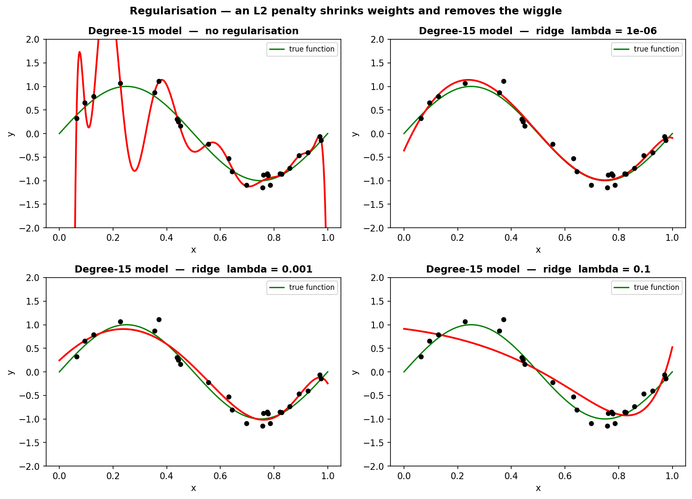
Kernel regression is a non-parametric alternative: the prediction at a point is a locally weighted average of the data. The kernel bandwidth plays the role of model capacity — wide kernels under-fit, narrow kernels over-fit.
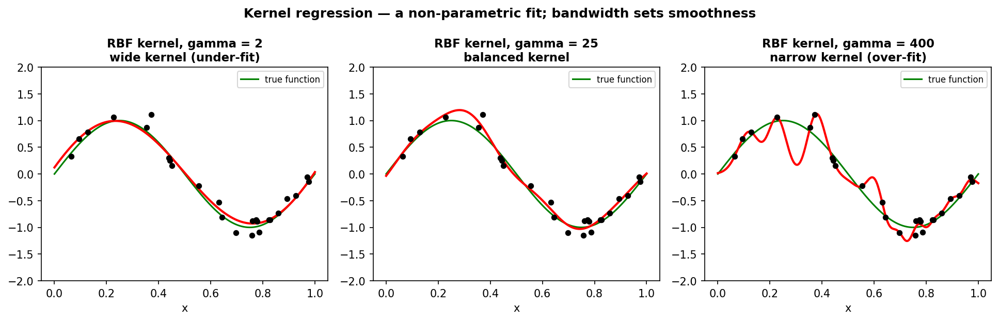
Syllabus topics: supervised learning, neural
networks, SGD, optimisers, back-propagation, convolutional neural
networks and architectures. Module:
unit5_learning.py — and the trained VeriVision CNNs of
Section 3.
A convolutional layer slides small kernels over the image. Hand-designed kernels blur, sharpen, emboss or detect edges; a CNN simply learns the kernels that best serve the task instead of having an engineer specify them.
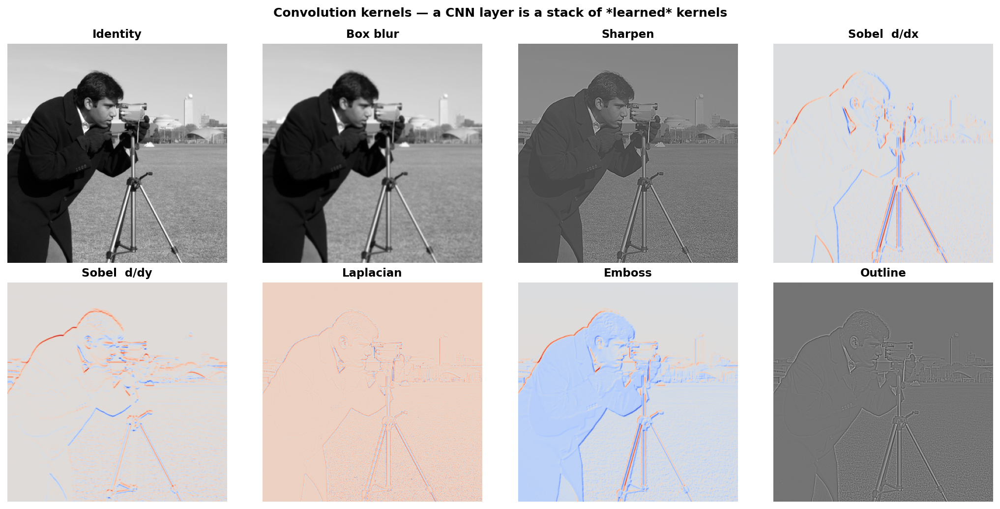
Networks are trained by gradient descent on a loss surface. Plain SGD struggles on ill-conditioned surfaces; momentum accelerates it, and Adam adapts a per-parameter step size. VeriVision is trained with AdamW for exactly this robustness.
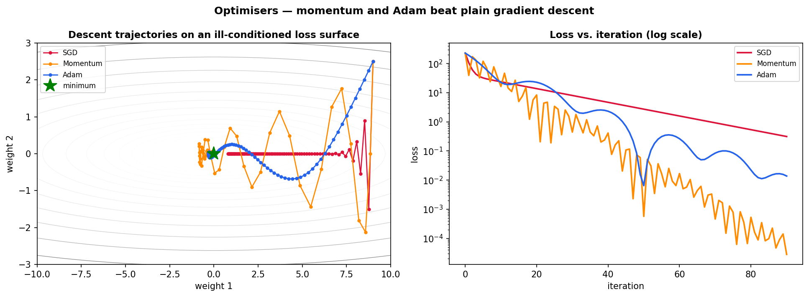
To make back-propagation concrete, a two-layer neural network was implemented in pure NumPy — forward pass, manual gradient computation by the chain rule, and an SGD update — and trained on a non-linearly-separable dataset.
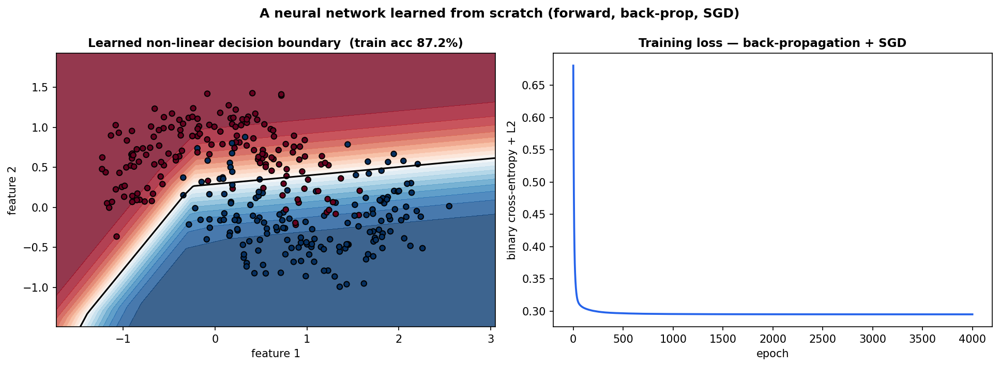
Scaling this principle up — many layers, convolutional weight-sharing, millions of parameters — gives the custom CNN and ResNet-50 of Section 3. CNN architectures in the syllabus are represented directly by those two trained models and their results.
Syllabus topics: translational alignment &
motion estimation, 3-D motion and its 2-D projection, optical-flow
estimation, perception & scene understanding.
Module: unit6_motion.py.
Optical flow is the per-pixel apparent motion between two frames. Estimating it is the basis of tracking, video stabilisation and action recognition.
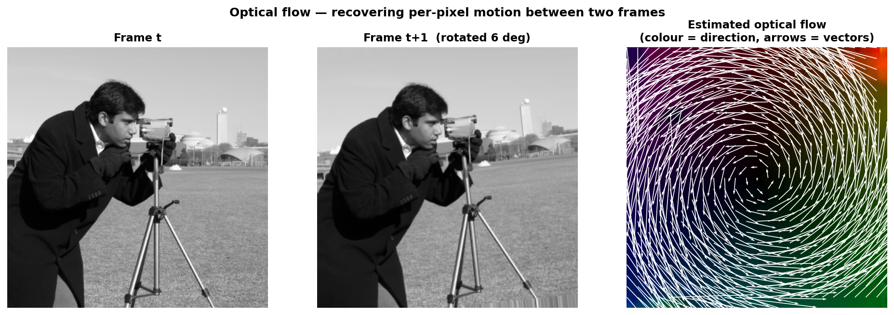
The simplest motion model is a pure translation. Phase correlation recovers an unknown shift between two frames to sub-pixel accuracy — the “translational alignment” of the syllabus — and is used to align and stabilise frames.
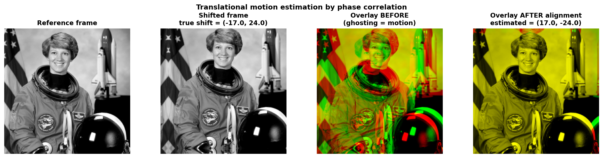
When the camera is static, frame differencing isolates what moved. Thresholding the absolute difference and cleaning it morphologically yields a change mask — the core of video surveillance.
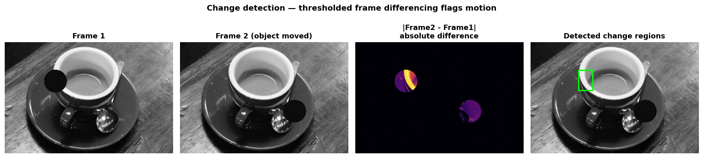
Syllabus topics: representation learning, perceptual
grouping, generative models, conditional generative models.
Module: unit7_representation.py — and
VeriVision itself, which detects conditional generative
models.
Representation learning seeks compact features that expose the structure of data. PCA is its linear archetype: it learns “eigen-images” — directions of maximum variance — and an image can be reconstructed from just a few coefficients. PCA is the linear cousin of the autoencoder.
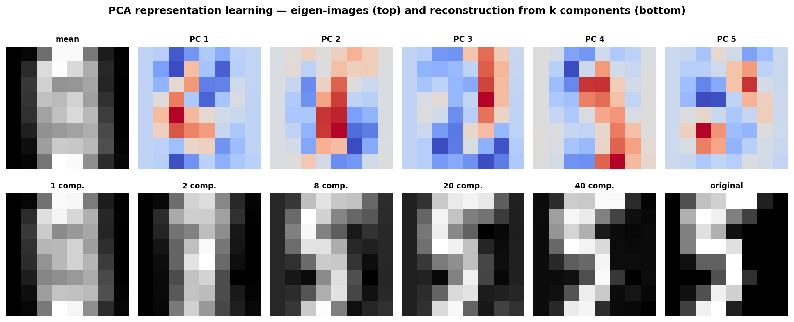
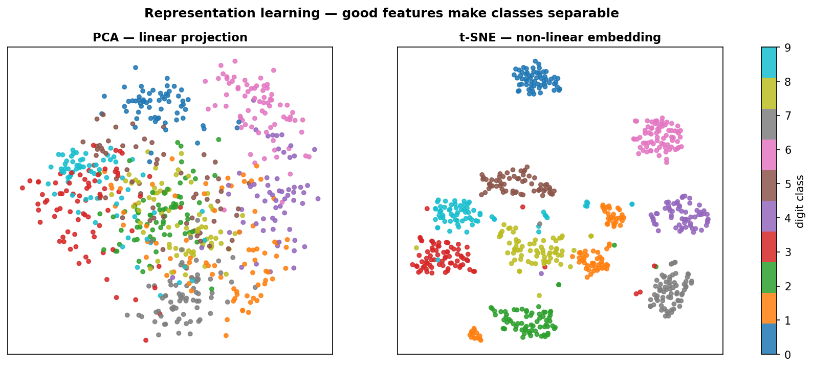
Perceptual grouping partitions an image into coherent regions. Superpixel and graph-based segmentation algorithms group pixels by colour and proximity — a compact mid-level representation for downstream recognition.
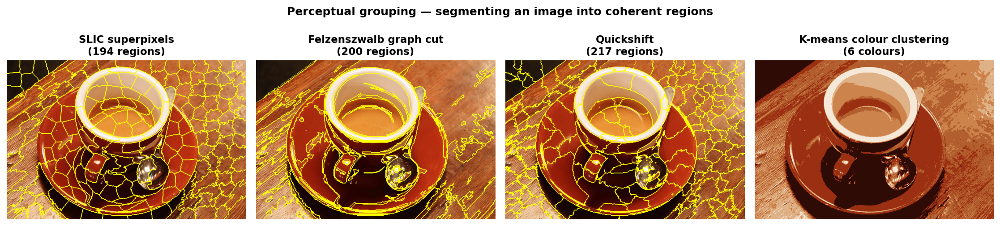
A generative model learns the distribution of data so it can synthesise new samples. A simple linear generative model fits PCA, treats the component scores as a Gaussian latent code, samples fresh codes and decodes them. This is the same encode → sample latent → decode recipe behind VAEs; modern diffusion models replace the linear decoder with a deep iterative denoiser, and conditional generative models add a text prompt.
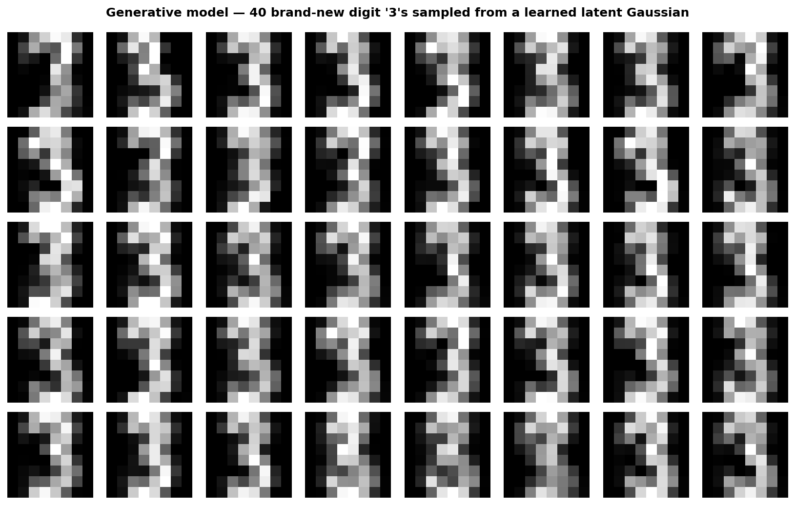
This unit closes the loop. The FAKE images that VeriVision is trained to detect are the output of a conditional generative model — Stable Diffusion prompted with a class name. Understanding how generative models work (this unit) is what makes it possible to detect them (Section 3). VeriVision is, in effect, the adversary of Unit 7’s generators.
The project was built to evidence the AIC341 lab learning outcomes and to touch every unit of the syllabus.
| Unit | Syllabus area | Project component | Report section |
|---|---|---|---|
| 1 | Introduction & image formation | unit1_image_basics |
§4 |
| 2 | Sampling, features, Hough, RANSAC | unit2_sampling/features/hough_ransac |
§5 |
| 3 | Transformations, stereo, epipolar geometry | unit3_transforms, unit3_stereo |
§6 |
| 4 | Model fitting & regularisation | unit4_model_fitting |
§7 |
| 5 | Learning, CNNs, optimisation | unit5_learning + VeriVision CNNs |
§3, §8 |
| 6 | Motion & change detection | unit6_motion |
§9 |
| 7 | Generative models & representation learning | unit7_representation + VeriVision |
§3, §10 |
| Lab CLO | Statement | Evidence |
|---|---|---|
| CLO-5 | Implement core CV algorithms using appropriate tools and libraries | Ten classical-CV modules in src/classical/ plus the
full VeriVision training and evaluation pipeline — all runnable, all
producing real figures. |
| CLO-6 | Develop a CV application in a team environment | VeriVision built end to end (data → preprocessing → models → evaluation → Streamlit demo → report) by a three-member team with divided responsibilities (see Appendix). |
All commands are run from the project root.
Environment
python -m venv .venv && source .venv/bin/activate
pip install -r requirements.txtClassical-CV toolkit (Units 1–7) — no GPU or dataset needed
python -m scripts.run_classical --unit all # writes reports/figures/classical/
python -m scripts.run_classical --unit 3 # a single unitVeriVision detector
# Data figures (works from the bundled sample images)
python -m scripts.verivision_figures
# Train / evaluate / predict (needs the CIFAKE dataset — see data/README.md)
python -m scripts.train --model resnet50 --epochs 5
python -m scripts.evaluate --checkpoint models_ckpt/resnet50.pt
python -m scripts.predict --checkpoint models_ckpt/resnet50.pt --image my.jpg --gradcam
# Interactive web demo
streamlit run app/streamlit_app.pyRebuild this report
python -m scripts.build_report # produces the .docx and .pdfVeriVision delivers a working, interpretable AI-image detector: a from-scratch CNN at 96.8 % accuracy and a ResNet-50 model at 98.3 % accuracy with a 0.998 ROC-AUC on the CIFAKE test set, with an FFT-channel preprocessing contribution and Grad-CAM explanations throughout. Around that detector, a ten-module classical-CV toolkit demonstrates every remaining unit of the AIC341 syllabus with real, reproducible result figures. The project therefore stands as a coherent whole-course portfolio rather than a single-topic exercise.
| Member | Registration | Primary responsibility |
|---|---|---|
| Shahzaib Haider Rizvi | FA23-BAI-050 | Data pipeline, preprocessing, the FFT-channel contribution |
| Aymen Ali Seemab | FA23-BAI-011 | Model architectures, training loop, classical-CV toolkit |
| Nimra Tahseen Yousaf | FA23-BAI-043 | Evaluation, Grad-CAM, Streamlit demo, report |
Responsibilities were shared collaboratively; the table records each member’s primary focus area.
VeriVision — submitted for AIC341 Introduction to Computer Vision, COMSATS University Islamabad, May 2026.